這是什麼？
車窗外，玻璃成了鏡子
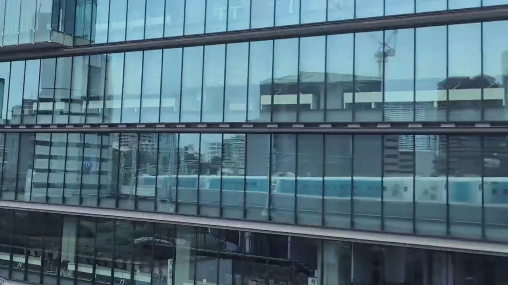
下方玻璃裡成列前進的藍色列車，就是拍攝者當時搭乘的列車。日本鐵道迷稱這種拍攝為 hansha-tetsu （反射鐵）：從車窗拍攝自己列車映在緊鄰鐵路的建築玻璃上的倒影。一邊搭車、一邊拍下正在搭乘的列車，正是其中一大樂趣。以下整理了我們在東海道新幹線實際拍到的地點與座位側別。
註：本頁所有白天照片，拍到的都是迪士尼主題 閃耀夢想新幹線。另一篇介紹反射鐵的英文文章，請見 Tokyo Railway Labyrinth ↗.
兩種地點
兩種地點
車站附近的建築
有樂町、東京至品川、品川之後、新橫濱、名古屋、京都
進出站前後，列車會減速至約60至70公里／小時（新橫濱拍攝時已在加速，約160公里／小時）。玻璃建築緊鄰鐵路；品川之後，約13秒內就接連在兩棟建築裡看見列車倒影。
工廠與企業用地
POLA袋井工廠、FUJITEC
長玻璃牆與鐵路平行，前方空地開闊。即使時速150至250公里，也能看到整列車的倒影。景象只持續一瞬，預先知道要看哪裡會更容易。
快速一覽
乘車時快速查看
以下列出拍攝方向與留意時機。時間是在各站停靠的回聲號上實測。
| 地點 | 座位 | 時間 |
|---|---|---|
| 01 有樂町丸井 | A座側 | 往新大阪： 東京出發後約1分鐘 |
| 02 東京—品川（夜間） | E座側 | 往東京： 品川與東京之間 |
| 03 品川之後 | A座側 | 往新大阪： 品川出發後約1分鐘 |
| 04 新橫濱之後 | A座側 | 往新大阪： 新橫濱出發後約1分鐘 |
| 05 POLA袋井工廠 | A座側 | 往新大阪： 掛川出發後約2.5分鐘 |
| 06 名古屋站前後 | A座側 | 往新大阪： 名古屋進站前與發車後不久 |
| 07 FUJITEC Big Wing | E座側 | 往東京： 米原抵達前約2分鐘 |
| 08 京都電腦學院 | E座側 | 往東京： 即將抵達京都前 |
東京 → 新大阪
沿線的鏡子
以下依往新大阪方向排列。往東京時順序相反，但A、E座的字母標示不變。
有樂町丸井
出發後，第一面鏡子
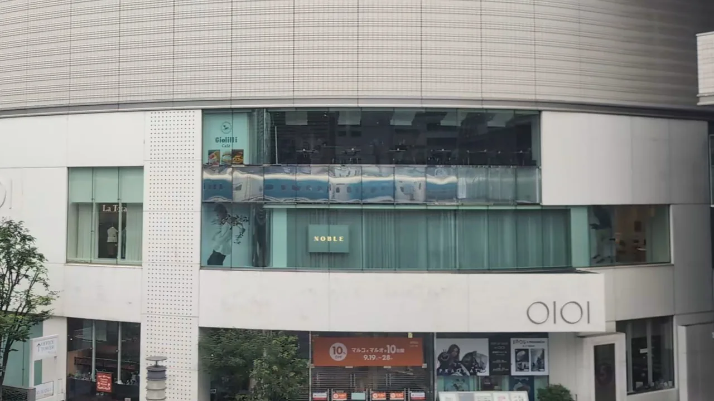
東京站發車約1分鐘、經過有樂町時，看A座側。丸井百貨咖啡樓層的一整條玻璃，會映出經過的列車。車速還不快，很適合第一次嘗試。
往新大阪，拍攝時：東京發車後約1分鐘
東京至品川之間的E座側
夜晚，一列車窗燈光
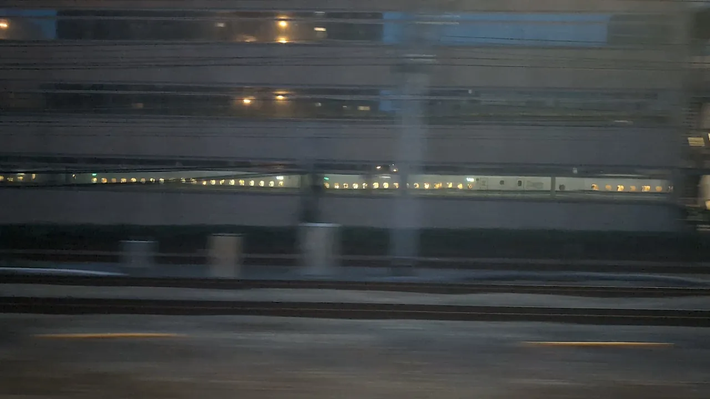
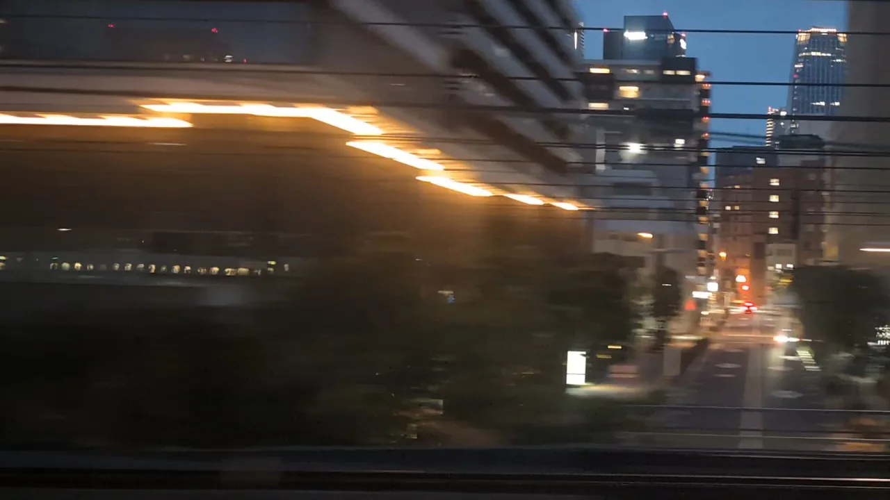
東京至品川之間，E座側沿線排列著玻璃建築，列車倒影接連出現。夜晚，亮著的車窗變成一列滑過玻璃的光點。照片是在一般列車上拍下的一小部分景象。
往東京，拍攝時：品川出發至東京抵達之間
第一三共品川研發中心與大崎Garden Tower
接連出現的兩棟建築
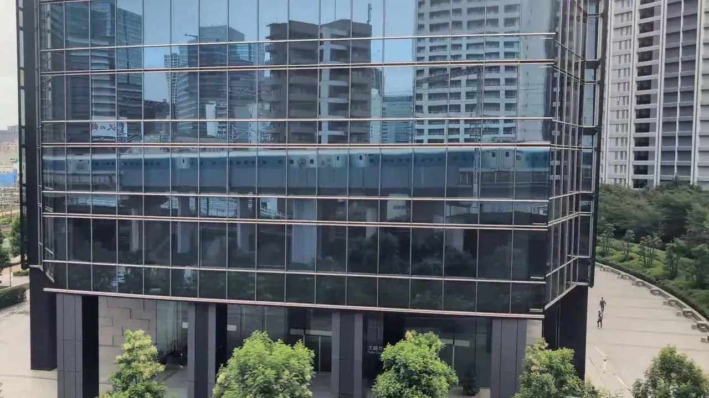
品川發車約1分鐘後，留意A座側。先是第一三共品川研發中心，約13秒後接著出現大崎Garden Tower。兩處都能看到列車成列映在低樓層玻璃裡。
往新大阪，拍攝時：品川發車後約1分鐘
新橫濱之後的低樓建築
加速時，掠過成排窗戶
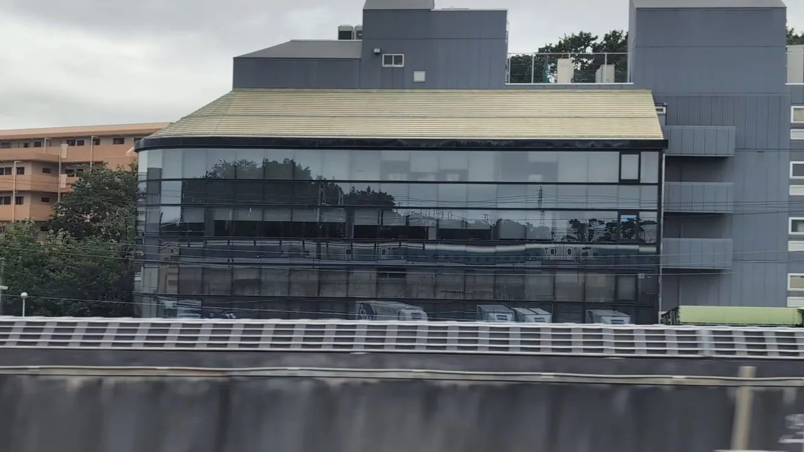
新橫濱發車約1分鐘後，在距車站約1.6公里的A座側。沿線建築排列著細長窗戶，列車倒影掠過下排玻璃。此時列車正在加速，只能看見幾秒。我們尚未確認建築名稱。
往新大阪，拍攝時：新橫濱發車後約1分鐘
POLA化成工業袋井工廠
長玻璃裡，列車從頭到尾
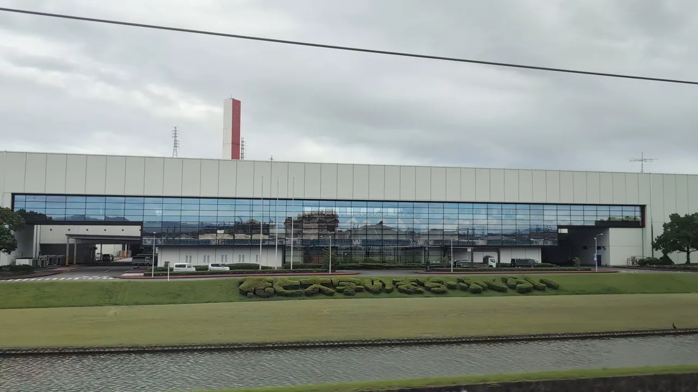
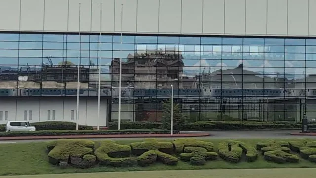
掛川之後、袋井一帶，A座側會出現一棟白色長工廠。草坪與樹籬後方，列車從頭到尾映在玻璃下緣。時速約250公里，轉瞬就過去了。
往新大阪時，同側約10秒後會接著出現帶有POCARI SWEAT字樣的大塚製藥工廠。往東京時，則在通過該工廠約10秒後留意。
往新大阪，拍攝時：掛川發車後約2.5分鐘（回聲號）
名古屋站前後
進站前與發車後不久
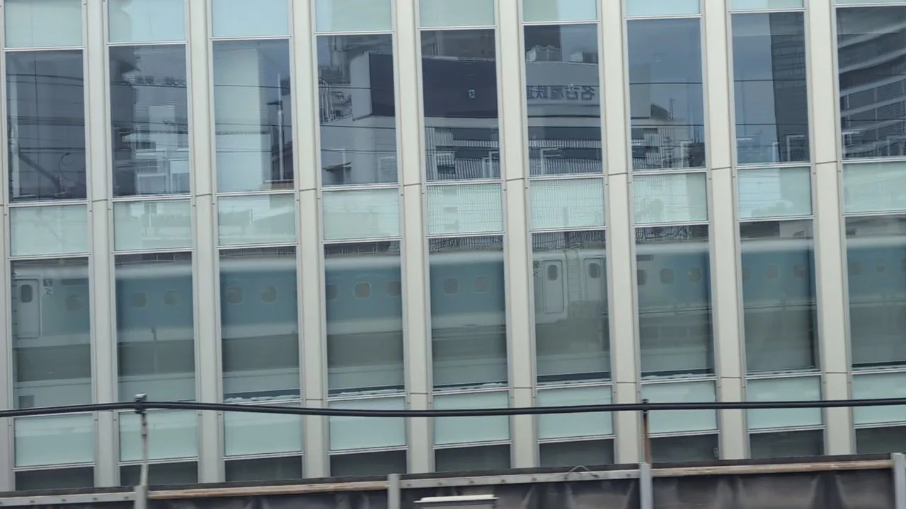
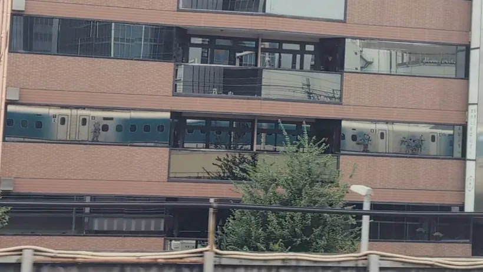
名古屋站周邊，A座側沿線有許多玻璃建築。進站前，高窗映出減速中的列車，對面名鐵的招牌也在玻璃上方反向映出。發車後，倒影連車身花紋都清楚可見。
往新大阪，拍攝時：名古屋進站前與發車後不久
FUJITEC Big Wing
研究塔旁的長玻璃
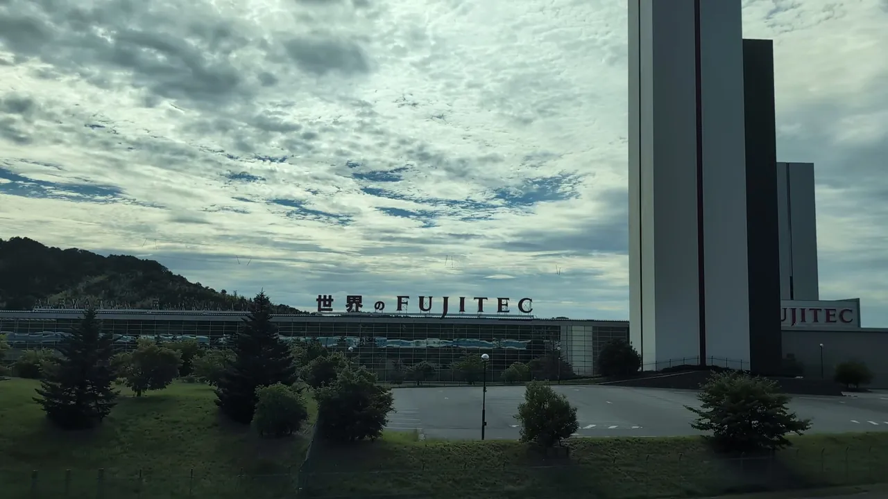
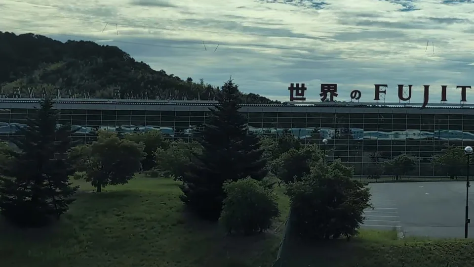
滋賀縣彥根市的FUJITEC Big Wing，以170公尺高的電梯研究塔聞名。塔的京都側，有一棟帶著大型FUJITEC字樣的長玻璃建築，會把列車映成一直線。往新大阪時，通過研究塔後就看；往東京時，則在抵達塔前留意。
往東京，拍攝時：米原抵達前約2分鐘（回聲號）
京都電腦學院京都站前校區
拱形窗戶、藍色列車
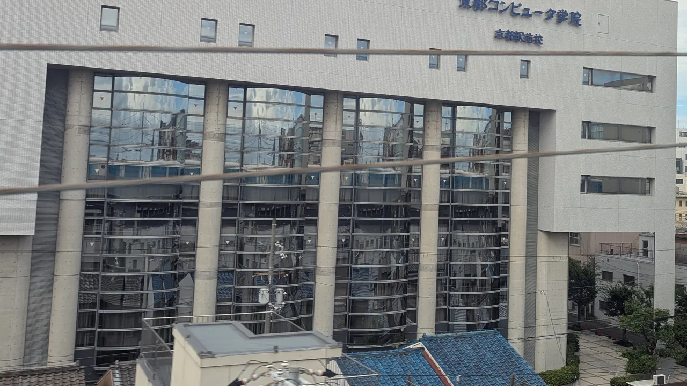
京都站西側的E座方向。寫著「京都電腦學院」的白色校舍，有高大的拱形窗戶，列車倒影會掠過窗戶上方。這一帶也正是對面A座側能看見東寺五重塔的區間。
往東京，拍攝時：即將抵達京都前
拍攝方法
自己拍攝看看
- 試試錄影。看列車滑過玻璃的過程，比單張照片更有趣，也能事後擷取畫面。本頁許多照片就是從影片切出的影格。
- 鏡頭靠近車窗，可減少車廂內部的反光。
- 不需要大晴天。本頁每張照片都是陰天拍攝的。
- 請在自己的座位拍攝，保持走道與車門區暢通，並避免拍到建築內的人或房間。